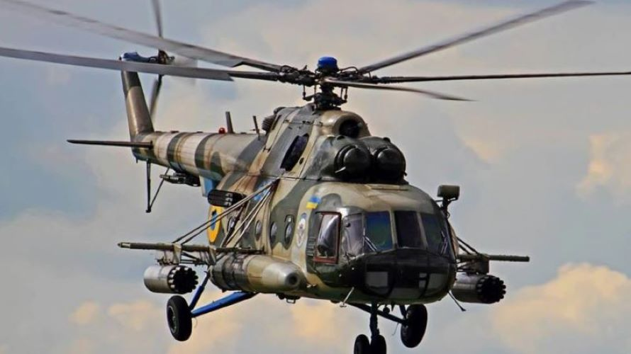
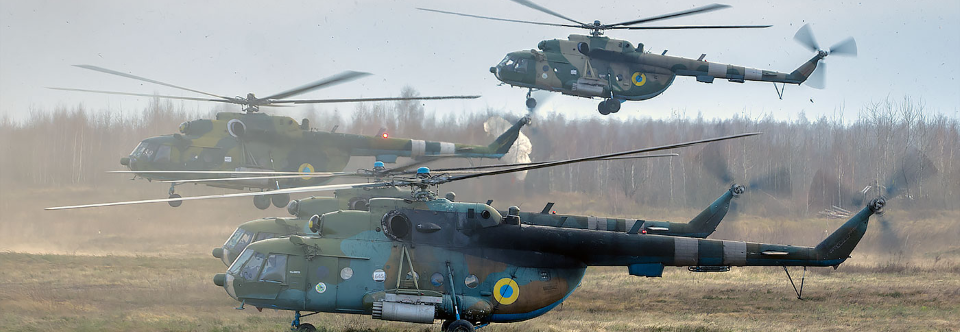
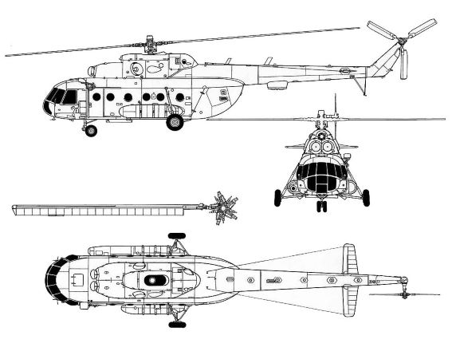

Мі-8МТ
Мі-8(Hip за класифікацією НАТО)
Мі-8 - радянський багатоцільовий вертоліт, розроблений ОКБ М. Л. Міля на початку 1960-х років. Наймасовіший у світі вертоліт із двома двигунами, один із наймасовіших вертольотів в історії авіації. Широко використовується для виконання багатьох цивільних і військових завдань.
Розробка проекту модернізованого гелікоптера Мі-8М зі збільшеною потужністю силової установки і вантажопідйомністю почалась ще в 1967 році в бригаді ОКБ-329.
Основною метою було поліпшення характеристик, зокрема збільшення корисного навантаження до понад 4 тони та висотних характеристик, за якими він поступався не тільки іноземним аналогам, а й власному попереднику – Мі-4. Цього планувалося досягнути за рахунок встановлення нового двигуна ТВЗ-117, потужністю 1900 к.с., який призначався для протичовнової амфібії Мі-14 і Мі-24.
Також було доцільним уніфікувати трансмісію, гвинти та двигун для всіх трьох апаратів. Крім того, мало відбутися оснащення апарату допоміжною установкою АІ-9 зі стартером-генератором та рульовим гвинтом зворотнього обертання. Дякуючи зміні направлення обертання, при якому нижня лопасть йшла вперед, назустріч потоку від несучого гвинта і збільшення хорди лопастей, ефективність керування значно зросла.
Модернізація мала проходити в два етапи: до моделі зі збільшеним фюзеляжем планувався випуск оновленого гелікоптера з мінімальними змінами. Неможливість використання базових Мі-8 у високогірних районах та у країнах з жарким кліматом прискорила процес розробки нового гелікоптера, і вже у 1975 році пройшло перше випробування Мі-8МТ.
Проект видався вдалим, завдяки покращеним показникам вантажопідйомності, швидкості набору висоти та практичної стелі. В 1977 році розгортається серійне виробництво Мі-8МТ в Казані. Необхідність використання подібного гелікоптера в Афганістані зробили його основним з лінійки Мі-8. У 1981 році Мі-8МТ був представлений на виставці Ле-Бурже, де йому був присвоєний міжнародний експортний індекс Мі-17, під яким він постачався за кордон (в СРСР Мі-8МТ).
За другим етапом модернізації, який розпочався у 1977 році було збільшено розмір фюзеляжу за рахунок включення симетрично до центру тяжіння двох півметрових секцій. Це дозволило перевозити 29 десантників, 36 пасажирів і 18 поранених на ношах.
Вертоліт Мі-8 є світовим рекордсменом за кількістю модифікацій.
Може бути озброєний носовим та кормовим ККТ, а також “ЕВУ”, пристрій викиду ХТЦ та дипольних відбивачів“АСО-2В”(під хвостовою балкою), і станцією оптико-електронних перешкод “Липа”. Серед устаткування присутні: радіостанції “Баклан-20” і “Ядро-1”, радіокомпаси АРК-15М і АРК-УД, доплерівський вимірювач швидкості і зносу ДИСС-32-90, авіагоризонти АГК-77 і АГК74В, радіовисотомір Ф-037, навігаційна система А-723, метеорадіолокатор 8А-813.
ЛТХ Мі-8МТ
Екіпаж - 3 чол
Двигуни типу ГТД ТВ3-117МТ - 2 по 1900кс
Максимальна швидкість – 250км/год
Крейсерська швидкість – 220км/год
Статистична стеля – 1760м
Динамічна стеля – 5000м
Дальність дії – 520км
Максимальна злітна маса – 13000кг
Нормальна злітна маса – 11100кг
Маса порожнього вертольота – 7200кг
Максимальне бойове навантаження - 4000кг
Кількість перевозимих людей – 29 десантників
Кількість перевозимих людей – 18 поранених
Габарити вертольота:
Діаметр несучого гвинта – 21,3м
Діаметр хвостового гвинта – 3,91м
Довжина – 18,4м
Висота – 4,86м
Ширина – 2,5м
Озброєння
До складу озброєння входять також підвісні пускові установки некерованих ракет калібром 57, 80 та 240 мм.
На пілонах вертольота можуть підвішуватися також авіабомби різного призначення масою до 500 кілограм і баки із запальною сумішшю.
Підвісне озброєння
На фермах гелікоптера розміщуються 4 вузла підвіски.
Серед підвісного озброєння є блоки НАР, зокрема НАРи: 55мм С-5, 80мм С-8, авіаційні фугасні, кластерні, напалмові та димові бомби калібрів: 250кг, або 500кг


НАРи: 55мм С-5, 80мм С-8
Для запуску НАРів використовуються різноманітні ПУ:
УВ-32-57
УВ-20-57
УВ-20-80


УВ-32-57 та УВ-20-80